JobsOhio
We redesigned JobsOhio's digital front door from the sitemap up: a new information architecture, component-driven wireframes, a full functional specification, and a detailed design system built to make great happen.
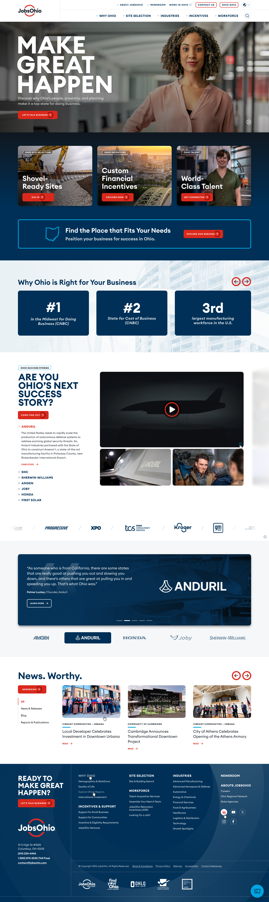
Overview
Rebuilding Ohio's economic-development platform around the way companies actually choose a state.
JobsOhio is the state's private, nonprofit economic development corporation. Its website is the first stop for site selectors, executives and talent weighing Ohio against every other state — and the legacy platform had grown into hundreds of loosely connected pages that were hard to navigate and harder to maintain.
The site had grown beyond the infrastructure it was built on, and JobsOhio needed a platform ready for the growth, conversion and lead-generation work it was planning. The Shipyard was selected to bring the whole experience forward in a modern strategic, visual and technology framework. The brief was clear about priorities: the site had to be a business development tool first, easy for internal teams to manage, and built to collect leads through both soft and hard calls to action, while giving talent audiences a clear path through to Ohio's recruitment programmes.
The work ran from customer and stakeholder research through a UX-led redesign and new visual design, technology consulting and development, analytics measurement planning and conversion-rate optimisation testing. The new JobsOhio.com launched in November 2025 alongside a large-scale creative campaign built to drive attention to the organisation and to the site itself.
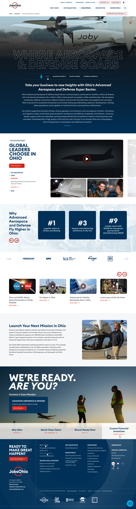
Our objectives
-
01.Ground the redesign in customer and stakeholder research, so the architecture mirrors how businesses actually evaluate a location.
-
02.Redesign the site around UX first, with a new visual design that carries the JobsOhio brand with confidence on desktop and mobile.
-
03.Make it a business development tool: soft and hard calls to action on every path, capturing leads and routing the vetted ones to the sales team.
-
04.Give internal teams a lightning-fast, component-based platform with a CMS that is easy to manage without a developer.
-
05.Measure everything from day one: an advanced Google Analytics plan, a reporting dashboard and conversion-rate optimisation testing.
Make Great Happen, Digitally
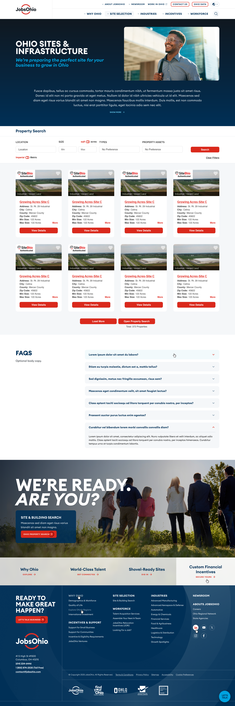
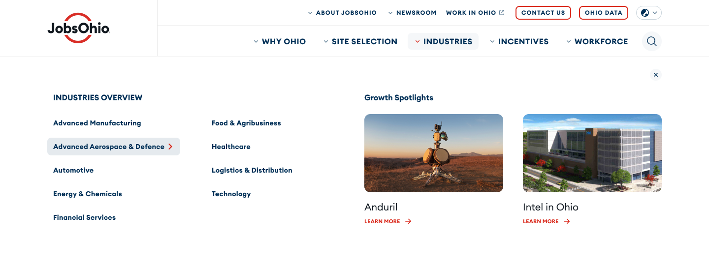
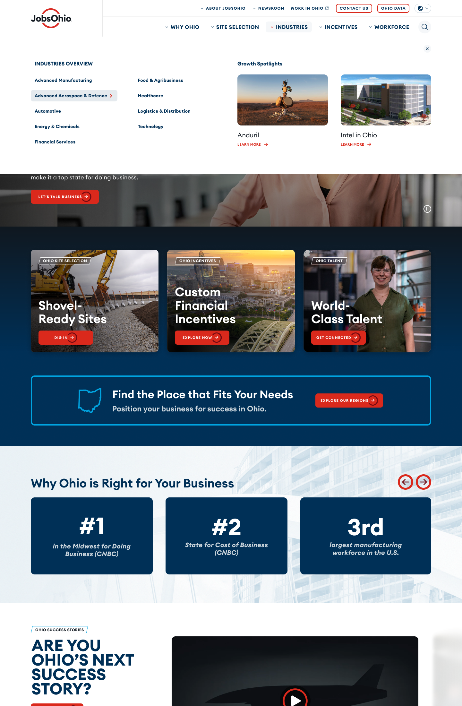
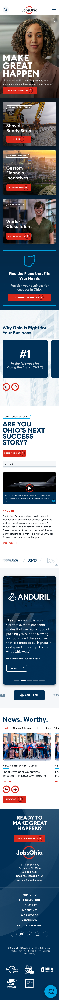
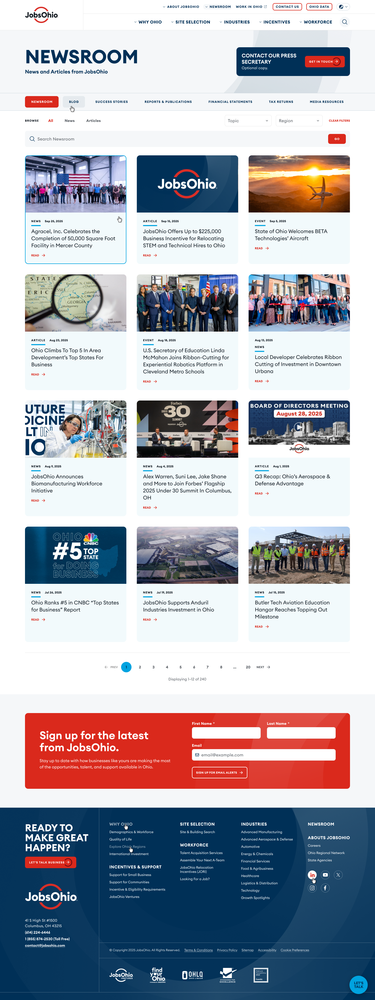
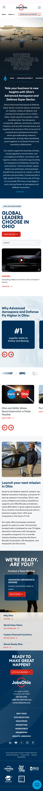
A home page that sells Ohio
A video-led hero under “Make Great Happen”, then three doors in: shovel-ready sites, custom financial incentives and world-class talent. A regions finder, CNBC rankings, success stories led by Anduril, a partner logo band and the newsroom all make the case before the footer asks the reader to talk business.
Industries built to soar
One flexible industry template, shown here for Advanced Aerospace & Defense: an outlined display headline over hero video, sub-sector tabs for space, advanced air mobility, military and federal, and commercial aerospace, then success stories, ranking cards, a video carousel and a “We’re ready. Are you?” moment that puts an industry specialist one click away.
Sites, searchable
Site selection reframed around the selector’s workflow. A property search by location, size in acres or square feet, type and property assets returns SiteOhio-authenticated listings as scannable cards, with a load-more grid, FAQs and a direct path into the full Ohio property search.
Navigation that maps the state
A mega-menu that maps the state. The Industries panel lists all ten sectors in two columns beside Growth Spotlights such as Anduril and Intel in Ohio, while Contact Us, Ohio Data and the utility links stay pinned in the top bar. On phones a drawer keeps every section one tap away.
News. Worthy.
News, blog, success stories, reports and publications, financial statements, tax returns and media resources under one filterable feed, with topic and region filters and search. A press-secretary contact and an email sign-up serve journalists and prospects alike.
Built with AI, owned by humans
An AI-assisted process, from sitemap to specification to screen
AI worked alongside the team from the first week. It helped audit the legacy site’s hundreds of pages and sort them into a content model, drafted the first pass of that model for the team to argue with, generated variations of specification language for components that repeat across templates, and checked screens against the design system for stray values before they reached the client.
The guardrails were simple. Every deliverable was reviewed and owned by the design team, and nothing went to JobsOhio without a person deciding it was right. AI shortened the distance between a decision and the artefact that captured it. It did not make the decisions.
“I cannot THANK YOU enough for the amazing new website! Your team knocked it out of the park. Passing along some of the VERY positive feedback we’ve received.”— Amanda Leeman, Sr. Digital Marketing Manager, JobsOhio
One system, every page
From a 7.0 sitemap to a component-driven specification
The sitemap went through seven major revisions with the client before it settled: Why Ohio, Site Selection, Industries, Incentives, Workforce, About and Newsroom, with the conversion pages that hang off each of them. Version 7.0, dated 18 November 2025, is the map the site launched on.
Component wireframes defined a shared kit of modules, so every template was assembled from the same proven parts. The functional specification then documented behaviour, states and content rules screen by screen, 114 screens across five delivery batches, so development could proceed without guesswork.
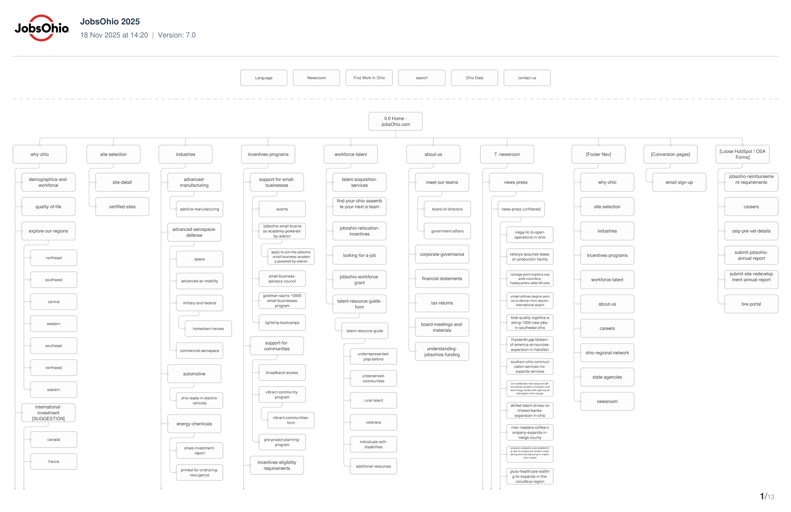
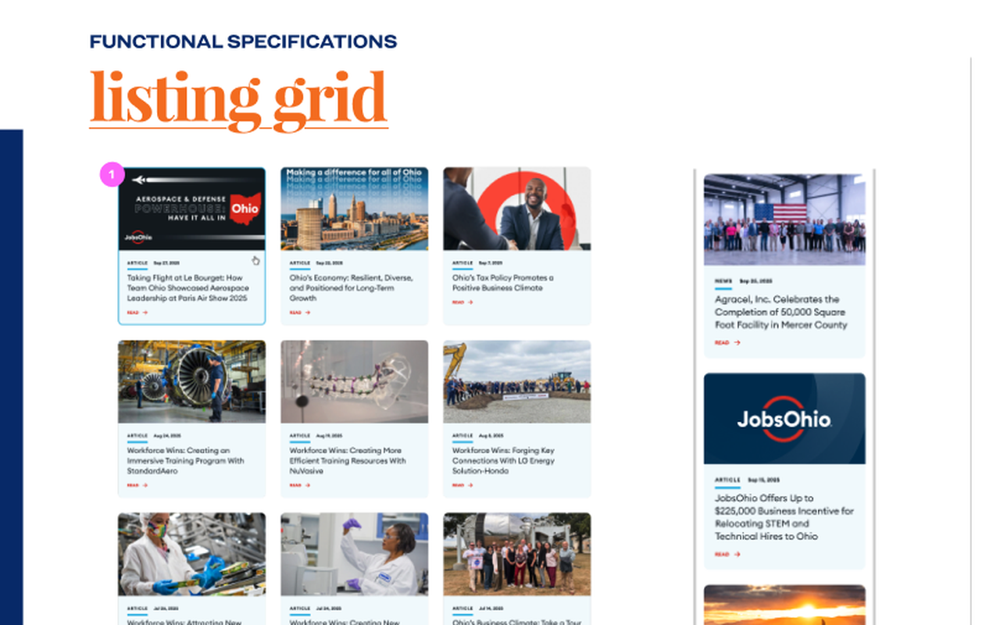
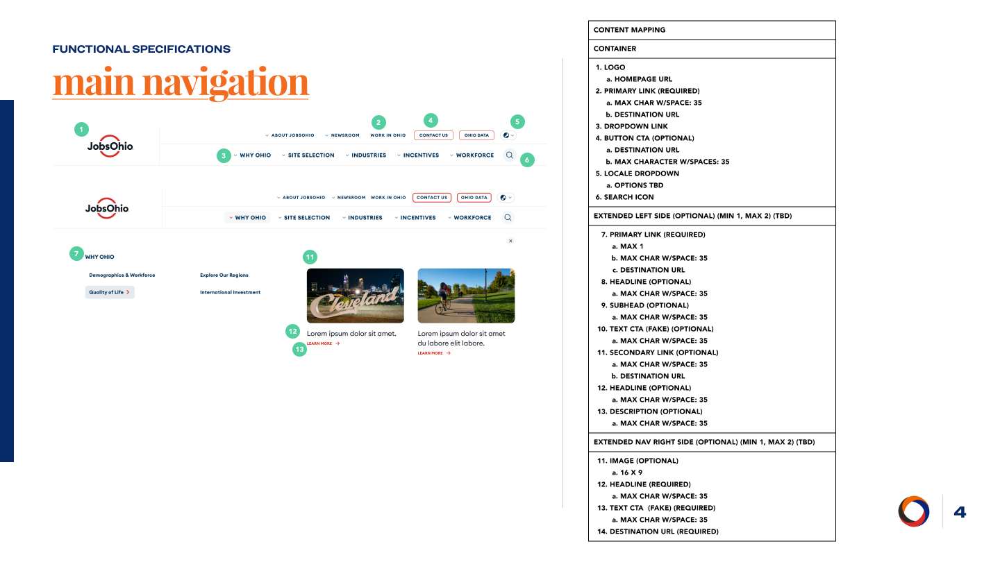
The impact
A platform Ohio can grow on, page by page
The new JobsOhio.com launched in November 2025 with a large-scale creative campaign driving attention to the organisation and, specifically, to the new site. In the nine months that followed, December 2025 to August 2026, the site recorded 2.6 million page views and 1.7 million users, 54% and 37% ahead of the previous nine months, and captured close to 6,000 form submissions through HubSpot. Visitors arriving from organic search stay for an average of three minutes and ten seconds. Every interaction is instrumented for reporting and optimisation across all traffic channels, an analytics dashboard gives the team a single view, and conversion-rate optimisation testing is under way. Day to day, the team now runs a lightning-fast site on a CMS it can manage itself.
Page views since launch
December 2025 to August 2026, running 54% ahead of the previous nine months on the old site.
Users in nine months
Up 37% on the period before, from New York, Chicago and Los Angeles to Singapore, alongside Columbus, Cleveland and Cincinnati.
Form submissions
Leads captured through HubSpot since launch, against roughly 120 in the nine months before. Paid and organic search drive most of them.